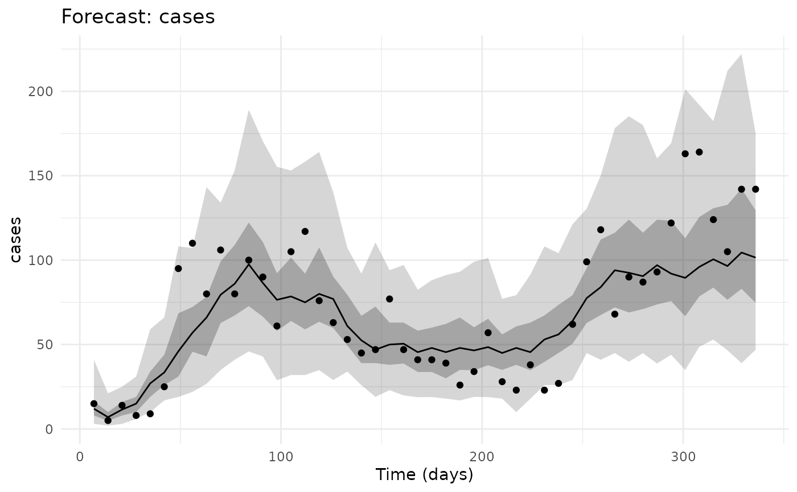
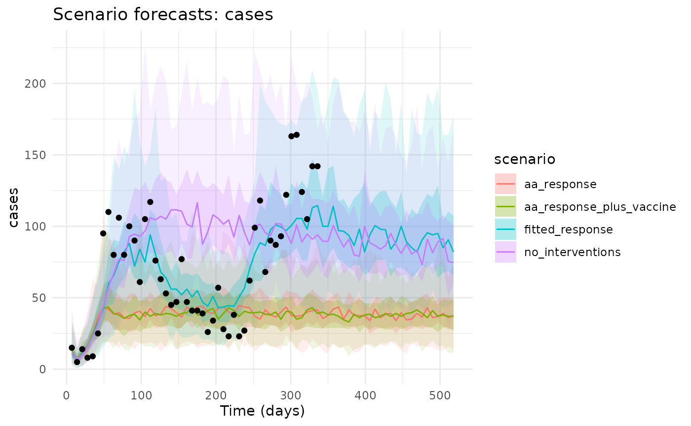
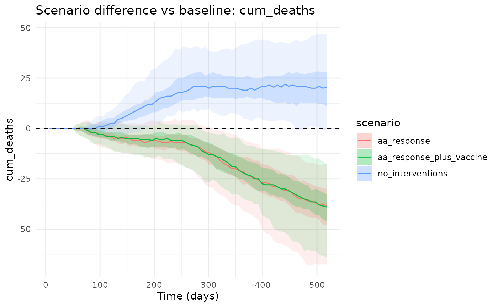

Starting From The Kirotshe Fit
Scenario analysis should start from a model that can reproduce the outbreak we are using as the baseline. The fitting vignette saves the stochastic pMCMC fit for Kirotshe as package example data, so here we read that object rather than refitting the model.
library(chlaa)
library(ggplot2)
library(dplyr)
#>
#> Attaching package: 'dplyr'
#> The following objects are masked from 'package:stats':
#>
#> filter, lag
#> The following objects are masked from 'package:base':
#>
#> intersect, setdiff, setequal, union
fit_obj <- readRDS(system.file(
"extdata", "kirotshe_particle_fit.rds",
package = "chlaa",
mustWork = TRUE
))
fit <- fit_obj$fit
base_pars <- fit_obj$pars
observed <- fit_obj$observed
burnin <- fit_obj$burnin
pars_fit <- chlaa_update_from_fit(
fit = fit,
pars = base_pars,
draw = "median",
burnin = burnin
)The posterior predictive check shows the fitted distribution for weekly reported cases. The points are the observed Kirotshe data; the ribbons and line come from posterior draws.
fit_fc <- chlaa_forecast_from_fit(
fit = fit,
pars = base_pars,
time = observed$time,
vars = "inc_symptoms_weekly",
include_cases = TRUE,
obs_interval = 7,
obs_model = "nbinom",
n_draws = 80,
burnin = burnin,
seed = 11,
dt = 1
)
chlaa_plot_forecast(
fit_fc,
var = "cases",
data = observed,
data_y = "cases"
)
Counterfactual Scenarios
The baseline scenario is the fitted outbreak with the recorded intervention timings. We compare it with one no-intervention counterfactual and two anticipatory-action examples. The AA examples move WASH and care earlier, and one adds a single-dose vaccination campaign.
horizon <- max(observed$time) + 182
scenario_time <- seq(7, horizon, by = 7)
trigger_time <- min(observed$time[observed$cases >= 50])
response_end <- horizon + 1
campaign_days <- 28
vaccine_doses <- floor(0.20 * pars_fit$N)
no_intervention <- list(
chlor_start = 0, chlor_end = 0, chlor_effect = 0,
hyg_start = 0, hyg_end = 0, hyg_effect = 0,
lat_start = 0, lat_end = 0, lat_effect = 0,
cati_start = 0, cati_end = 0, cati_effect = 0,
orc_start = 0, orc_end = 0, orc_capacity = 0,
ctc_start = 0, ctc_end = 0, ctc_capacity = 0,
vax1_start = 0, vax1_end = 0, vax1_doses_per_day = 0, vax1_total_doses = 0,
vax2_start = 0, vax2_end = 0, vax2_doses_per_day = 0, vax2_total_doses = 0
)
aa_response <- list(
chlor_start = trigger_time, chlor_end = response_end, chlor_effect = pars_fit$chlor_effect,
hyg_start = trigger_time, hyg_end = response_end, hyg_effect = pars_fit$hyg_effect,
lat_start = trigger_time, lat_end = response_end, lat_effect = max(pars_fit$lat_effect, 0.10),
cati_start = trigger_time, cati_end = response_end, cati_effect = pars_fit$cati_effect,
orc_start = trigger_time, orc_end = response_end, orc_capacity = pars_fit$orc_capacity,
ctc_start = trigger_time, ctc_end = response_end, ctc_capacity = pars_fit$ctc_capacity,
vax1_start = 0, vax1_end = 0, vax1_doses_per_day = 0, vax1_total_doses = 0,
vax2_start = 0, vax2_end = 0, vax2_doses_per_day = 0, vax2_total_doses = 0
)
aa_vaccination <- modifyList(aa_response, list(
vax1_start = trigger_time + 14,
vax1_end = trigger_time + 14 + campaign_days,
vax1_total_doses = vaccine_doses,
vax1_doses_per_day = vaccine_doses / campaign_days
))
scenarios <- list(
chlaa_scenario("no_interventions", no_intervention),
chlaa_scenario("aa_response", aa_response),
chlaa_scenario("aa_response_plus_vaccine", aa_vaccination)
)
vapply(scenarios, `[[`, character(1), "name")
#> [1] "no_interventions" "aa_response"
#> [3] "aa_response_plus_vaccine"Posterior Scenario Forecasts
chlaa_forecast_scenarios_from_fit() uses the same
posterior draws for each scenario, then reports absolute forecasts and
paired differences against the baseline. That pairing matters because it
removes some Monte Carlo noise from scenario differences.
scenario_fc <- chlaa_forecast_scenarios_from_fit(
fit = fit,
pars = base_pars,
scenarios = scenarios,
baseline_name = "fitted_response",
time = scenario_time,
vars = c("inc_symptoms_weekly", "cum_symptoms", "cum_deaths"),
include_cases = TRUE,
obs_interval = 7,
n_draws = 60,
burnin = burnin,
seed = 12,
dt = 1
)
chlaa_plot_scenario_forecasts(
scenario_fc,
var = "cases",
type = "absolute",
data = observed,
data_y = "cases"
)
chlaa_plot_scenario_forecasts(
scenario_fc,
var = "cum_deaths",
type = "difference",
include_baseline = FALSE
)
Decision Summary
For compact decision tables we simulate the same scenarios using the posterior median parameter set. This is faster and easier to inspect, while the forecast plots above show posterior uncertainty.
scenario_runs <- chlaa_run_scenarios(
pars = pars_fit,
scenarios = c(list(chlaa_scenario("fitted_response", list())), scenarios),
time = scenario_time,
n_particles = 50,
dt = 1,
seed = 13
)
chlaa_scenario_summary(
scenario_runs,
baseline = "fitted_response",
incidence_var = "inc_symptoms_weekly"
)
#> # A tibble: 4 × 8
#> scenario total_cases total_deaths cases_averted deaths_averted peak_incidence
#> <chr> <dbl> <dbl> <dbl> <dbl> <dbl>
#> 1 aa_respo… 30470. 27.2 27904. 40.0 504.
#> 2 aa_respo… 29431. 27.2 28942. 40.0 506.
#> 3 fitted_r… 58374. 67.2 0 0 1080.
#> 4 no_inter… 67610. 84.3 -9237. -17.1 1174.
#> # ℹ 2 more variables: time_peak <dbl>, time_to_control <dbl>
chlaa_compare_scenarios(
scenario_runs,
baseline = "fitted_response",
include_econ = TRUE,
wtp = 1500
)
#> # A tibble: 4 × 21
#> scenario infections cases_symptomatic deaths doses orc_treated ctc_treated
#> <chr> <dbl> <dbl> <dbl> <dbl> <dbl> <dbl>
#> 1 aa_response 122422. 30470. 27.2 0 2019. 3467.
#> 2 aa_respons… 118210. 29431. 27.2 103124 1946 3345.
#> 3 fitted_res… 235288. 58374. 67.2 0 1016. 1867.
#> 4 no_interve… 272692. 67610. 84.3 0 0 0
#> # ℹ 14 more variables: infections_averted <dbl>, cases_averted <dbl>,
#> # deaths_averted <dbl>, cost <dbl>, dalys <dbl>, cost_diff <dbl>,
#> # dalys_averted <dbl>, icer_cost_per_daly_averted <dbl>,
#> # icer_cost_per_death_averted <dbl>, mean_cost_vax <dbl>,
#> # mean_cost_care <dbl>, mean_cost_wash <dbl>, nmb <dbl>, inmb <dbl>The no-intervention scenario is useful for estimating how much the recorded response may have changed the outbreak. The AA scenarios ask a different question: what changes if similar response levers are triggered earlier, with or without vaccination.